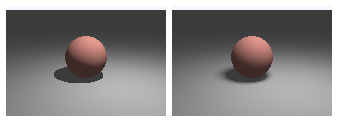
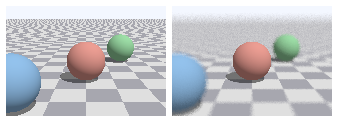
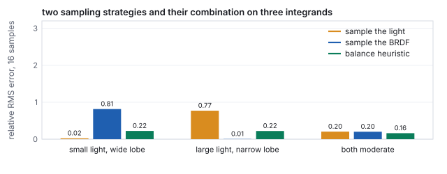
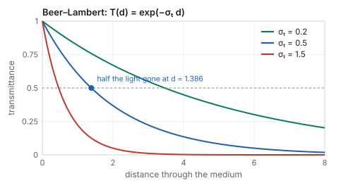

This chapter links to the course’s interactive demos and uses MathJax for its
formulas. Read it through the course website (or download the file and open it in a
browser); a Canvas inline preview will reach neither the demos nor the math.
All chapters.
Ray Tracing and Global Illumination
CSS 551 · Advanced 3D Computer Graphics · course text
Course text · rendering by following light backward: camera rays, intersections with spheres, triangles and boxes, rays through instanced objects, Whitted’s recursive shadows, reflections and refractions, the distributed rays that soften them, the acceleration structure that makes it feasible, Monte Carlo integration with importance sampling and the combination of two strategies, path tracing with a Cornell box rendered by the chapter’s own code, light in a medium, and the other global-illumination methods. Not tied to a lecture; pairs with the light-transport chapter, which owns the rendering equation and the BRDF.
The rasterizer of the earlier chapters asks, for each triangle, which pixels it covers. Ray tracing asks the opposite question, for each pixel, which surface it sees, by following a ray from the eye through the pixel into the scene. The reversal costs a search per pixel and buys everything the rasterizer cannot do directly: exact shadows, mirrors, glass, and, once the rays are allowed to bounce at random, the whole of global illumination. This chapter builds the machine from its parts. It casts a camera ray through the illumination demo’s sphere and solves the quadratic by hand, intersects a triangle two ways and a box, sends a ray into an instanced ellipsoid, traces Whitted’s reflection and refraction tree with Snell’s law and the Fresnel factor worked, renders a small scene with that recursion, and then softens it: an area light sampled for a penumbra and a thin lens for depth of field, both rendered. A bounding-volume hierarchy turns a scene of seventy thousand triangles from impossible to routine. The second half replaces the fixed tree by random sampling: a four-sample Monte Carlo estimate, the measured \(1/\sqrt{N}\) convergence, the two ways to sample a lighting integral and the combination that survives both failures, and a Cornell box path-traced at 8 and 512 samples per pixel next to the same scene lit directly, the difference being the indirect light a local model omits. Fog and the shader stages of a hardware ray tracer close the chapter.
Definition (ray)
A ray is a point and a unit direction, \(\mathbf{r}(t) = \mathbf{o} + t\,\mathbf{d}\), \(t \ge 0\).
Intersecting it with a surface means finding the smallest positive \(t\) at which \(\mathbf{r}(t)\)
lies on the surface; \(t\) is then the distance to the hit.
The camera of the viewing chapter gives the ray through a pixel.
With the eye at \(\mathbf{e}\), the camera basis \(\mathbf{u}, \mathbf{v}, \mathbf{w}\) (right, up, and
backward), a vertical field of view \(\phi\) and a square image of \(S\) pixels, the pixel
\((p_x, p_y)\) has normalized coordinates
\(s_x = 2(p_x + \tfrac12)/S - 1\), \(s_y = 1 - 2(p_y + \tfrac12)/S\) in \([-1, 1]\), and its ray is
\[
\mathbf{d} = \mathrm{normalize}\bigl(s_x \tan\tfrac{\phi}{2}\,\mathbf{u} + s_y \tan\tfrac{\phi}{2}\,\mathbf{v} - \mathbf{w}\bigr), \qquad \mathbf{o} = \mathbf{e}.
\]
This is the projection matrix run backward: instead of mapping a point to a pixel, it maps a pixel
to the line of points that project there. No matrix is needed, and no perspective divide: the
perspective is in the fan of directions. The interaction
chapter builds the same ray from the inverse of the projection and view matrices, and the two
agree to four digits on the pixel below.
Worked example (the ray through the marked point’s pixel)
The illumination demo’s camera at \(\mathbf{e} = (3, 3, 6)\) looking at the origin, with
\(\phi = 28^\circ\) and \(S = 150\), has basis \(\mathbf{u} = (0.894, 0, -0.447)\),
\(\mathbf{v} = (-0.183, 0.913, -0.365)\), \(\mathbf{w} = (0.408, 0.408, 0.816)\) and
\(\tan 14^\circ = 0.2493\). The marked point \((0.693, 0.693, 0.693)\) projects to pixel \((89, 62)\)
(its pixel in the illumination chapter’s figure). That pixel’s center has
\((s_x, s_y) = (0.1933, 0.1667)\), so
\(\mathbf{d} = \mathrm{normalize}(0.0482\,\mathbf{u} + 0.0416\,\mathbf{v} - \mathbf{w}) = (-0.372, -0.370, -0.852)\),
pointing from the camera toward the origin and slightly to the camera’s left and up, where the
marked point sits.
2 · Intersections: sphere, triangle, box
Ray against a sphere
A sphere of center \(\mathbf{c}\) and radius \(r\): substitute the ray into \(|\mathbf{p} - \mathbf{c}|^2 = r^2\).
With \(\mathbf{m} = \mathbf{o} - \mathbf{c}\) and unit \(\mathbf{d}\),
\[
t^2 + 2(\mathbf{m}\cdot\mathbf{d})\,t + (\mathbf{m}\cdot\mathbf{m} - r^2) = 0, \qquad
t = -b \pm \sqrt{b^2 - c}, \quad b = \mathbf{m}\cdot\mathbf{d},\; c = \mathbf{m}\cdot\mathbf{m} - r^2.
\]
A negative discriminant is a miss; otherwise the smaller positive root is the entry point and the
larger the exit. The normal at a hit \(\mathbf{p}\) is \((\mathbf{p} - \mathbf{c})/r\).
Worked example (the demo’s sphere, hit and miss)
For the ray of Section 1 and the sphere \(r = 1.2\) at the origin, \(\mathbf{m} = \mathbf{e}\), so
\(b = \mathbf{e}\cdot\mathbf{d} = 3(-0.372) + 3(-0.370) + 6(-0.852) = -7.334\) and
\(c = 54 - 1.44 = 52.56\). The discriminant \(b^2 - c = 53.78 - 52.56 = 1.222\) is positive:
\(t = 7.334 \mp 1.106\), entry at \(t = 6.228\), exit at \(8.439\). The hit is
\(\mathbf{e} + 6.228\,\mathbf{d} = (0.683, 0.698, 0.697)\), within 0.012 of the marked point (the pixel
center is not exactly the point’s projection), and the normal there is the hit divided by 1.2.
Pixel \((20, 20)\) near the image corner gives \(b = -7.119\) and \(b^2 - c = -1.887\): no real root, the
ray misses the sphere and sees the background.
Hands-on
The sphere test is four lines with the course library’s vector functions. From the course folder:
(the three-decimal direction differs from the exact one in the fourth digit, hence the hit’s
last digit).
Replace the direction by that of pixel \((20, 20)\), \(\mathrm{normalize}(s_x\tan14^\circ\,\mathbf{u} + s_y\tan14^\circ\,\mathbf{v} - \mathbf{w})\) with \(s_x = s_y = -0.7267\), and confirm a negative discriminant.
Move the sphere to \(\mathbf{c} = (0, 0.5, 0)\) by replacing \(\mathbf{e}\) with \(\mathbf{e} - \mathbf{c}\) in \(b\) and \(c\); the ray now passes the sphere on which side?
Add the far root \(-b + \sqrt{\text{disc}}\) and compute the chord length inside the sphere, \(2\sqrt{\text{disc}}\).
Ray against a triangle, two ways
A triangle \(\mathbf{A}\mathbf{B}\mathbf{C}\) with normal \(\mathbf{n} = (\mathbf{B}-\mathbf{A})\times(\mathbf{C}-\mathbf{A})\).
Plane first: \(t = (\mathbf{A} - \mathbf{o})\cdot\mathbf{n} / (\mathbf{d}\cdot\mathbf{n})\), then the
inside test on the hit point with the three edge functions of
the rasterization chapter, which also yield the barycentric
weights for interpolating the vertex attributes. Möller–Trumbore (1997) solves for
\(t\) and the barycentric coordinates \((u, v)\) of the hit at once, without forming the plane: with
\(\mathbf{e}_1 = \mathbf{B} - \mathbf{A}\), \(\mathbf{e}_2 = \mathbf{C} - \mathbf{A}\), \(\mathbf{s} = \mathbf{o} - \mathbf{A}\),
\(\mathbf{p} = \mathbf{d}\times\mathbf{e}_2\), \(\mathbf{q} = \mathbf{s}\times\mathbf{e}_1\),
\[
\det = \mathbf{e}_1\cdot\mathbf{p}, \qquad u = \frac{\mathbf{s}\cdot\mathbf{p}}{\det}, \qquad v = \frac{\mathbf{d}\cdot\mathbf{q}}{\det}, \qquad t = \frac{\mathbf{e}_2\cdot\mathbf{q}}{\det},
\]
a hit exactly when \(u \ge 0\), \(v \ge 0\), \(u + v \le 1\) and \(t > 0\); \(\det = 0\) means the ray
is parallel to the triangle. It is Cramer’s rule on the three unknowns of
\(\mathbf{o} + t\mathbf{d} = \mathbf{A} + u\,\mathbf{e}_1 + v\,\mathbf{e}_2\), and it is the routine in nearly every
production tracer because it reads only the three vertices and does two cross products and four dot
products.
Worked example (Möller–Trumbore on one triangle)
\(\mathbf{A} = (0,0,0)\), \(\mathbf{B} = (2,0,0)\), \(\mathbf{C} = (0,2,0)\); ray from \((0.5, 0.5, 1)\) straight
down, \(\mathbf{d} = (0, 0, -1)\). \(\mathbf{e}_1 = (2, 0, 0)\), \(\mathbf{e}_2 = (0, 2, 0)\),
\(\mathbf{p} = \mathbf{d}\times\mathbf{e}_2 = (2, 0, 0)\), \(\det = 4\). \(\mathbf{s} = (0.5, 0.5, 1)\),
\(u = \mathbf{s}\cdot\mathbf{p}/4 = 0.25\); \(\mathbf{q} = \mathbf{s}\times\mathbf{e}_1 = (0, 2, -1)\),
\(v = \mathbf{d}\cdot\mathbf{q}/4 = 0.25\); \(t = \mathbf{e}_2\cdot\mathbf{q}/4 = 1\). Hit at \(t = 1\) with
barycentric coordinates \((1 - u - v, u, v) = (0.5, 0.25, 0.25)\): the plane-first method gives the
same \(t = 1\), hit point \((0.5, 0.5, 0)\), and the same weights. The ray from \((1.5, 1.5, 1)\) gives
\(u = v = 0.75\), \(u + v = 1.5 > 1\): outside, beyond the hypotenuse, which plane-first reports as a
negative edge function \(-2\) on edge \(\mathbf{B}\mathbf{C}\). A ray with \(\mathbf{d} = (1, 0, 0)\) gives
\(\det = 0\): parallel, no test.
Ray against a box
An axis-aligned box \([x_0, x_1]\times[y_0, y_1]\times[z_0, z_1]\) is three slabs: for each axis the
ray is inside the slab for \(t \in [(x_0 - o_x)/d_x,\; (x_1 - o_x)/d_x]\) (sorted); the ray hits the
box exactly when the three intervals overlap, entering at the largest lower bound and leaving at the
smallest upper bound. A zero component of \(\mathbf{d}\) gives an infinite interval, or an empty one if
the origin is outside that slab.
Worked example (a box)
The unit box \([0,1]^3\) and the ray from \((-1, 0.5, 0.5)\)
with \(\mathbf{d} = (0.981, 0.196, 0)\): the \(x\) slab gives \(t \in [1.02, 2.04]\), the \(y\) slab
\(t \in [-2.55, 2.55]\), and \(d_z = 0\) with \(o_z\) inside the \(z\) slab imposes nothing; the overlap is
\([1.02, 2.04]\), so the ray enters at \(t = 1.02\), at \((0, 0.7, 0.5)\) on the box’s left face.
A ray tracer’s inner loop is these three routines. Everything else in a scene is either
triangles (meshes), or is tested through a box around it (Section 6), or is reached by transforming
the ray (next).
3 · Instancing: rays into object space
A scene of a thousand identical chairs stores one chair and a thousand matrices, as
the scene-graph chapter describes. A ray tracer never
transforms the chair; it transforms the ray. With the object’s world matrix \(M\), the ray is
pulled into object space by \(M^{-1}\), intersected with the stored geometry there, and the hit
distance and normal are carried back.
The transformed ray
\(\mathbf{o}' = M^{-1}\mathbf{o}\) (as a point), \(\mathbf{d}' = M^{-1}\mathbf{d}\) (as a vector, translation
ignored), and \(\mathbf{d}'\) is not renormalized: then the parameter \(t\) of the object-space
hit is the world-space parameter too, and the world hit is \(\mathbf{o} + t\mathbf{d}\). The normal comes
back through the inverse transpose, \((M^{-1})^{\top}\mathbf{n}'\), for the reason given in
the illumination chapter. Since \(\mathbf{d}'\) is not unit, the
sphere quadratic keeps its leading coefficient \(a = \mathbf{d}'\cdot\mathbf{d}'\).
Worked example (an ellipsoid as a scaled sphere)
The unit sphere scaled by \(S = \mathrm{diag}(2, 1, 1)\) is an ellipsoid two units long in \(x\). Ray
from \((4, 0.5, 0)\) in direction \((-1, 0, 0)\). Object space: \(\mathbf{o}' = (2, 0.5, 0)\),
\(\mathbf{d}' = (-0.5, 0, 0)\), of length \(0.5\). The quadratic with \(a = 0.25\), \(b = \mathbf{o}'\cdot\mathbf{d}' = -1\),
\(c = |\mathbf{o}'|^2 - 1 = 3.25\): discriminant \(b^2 - ac = 0.1875\), \(t = (1 - 0.433)/0.25 = 2.268\). The
object-space hit is \((0.866, 0.5, 0)\), on the unit sphere; the world hit is
\(\mathbf{o} + 2.268\,\mathbf{d} = (1.732, 0.5, 0)\), and \(1.732^2/4 + 0.5^2 = 1\) confirms it is on the
ellipsoid, \(2.268\) units from the origin of the ray as \(t\) says. The object normal is the hit
itself, \((0.866, 0.5, 0)\); through \((S^{-1})^{\top} = \mathrm{diag}(\tfrac12, 1, 1)\) and normalizing it is
\((0.655, 0.756, 0)\). Pushing the normal through \(S\) instead would give \((0.961, 0.277, 0)\),
\(33^\circ\) off, and the ellipsoid would shade as if it were much flatter than it is.
Instancing also makes the bounding-volume hierarchy of Section 6 two-level: a top-level tree over
the instances’ world-space boxes, and one bottom-level tree per distinct object in its own space,
built once and shared. Hardware ray tracing exposes exactly this structure.
4 · Whitted ray tracing: shadows, mirrors, glass
Appel cast rays in 1968 to find visible surfaces and shadows. Whitted’s 1980 algorithm made the
hit point itself a source of rays: at each hit, shade with the local model of
the illumination chapter, but first send a shadow ray toward
each light and use the light only if nothing blocks it; then, for a reflective surface, send a
reflection ray in the mirror direction and add what it sees; for a transparent one, send a
refraction ray bent by Snell’s law and add that too. Each secondary ray is traced by the
same routine, so the image is a recursion, a tree of rays per pixel, cut off at a maximum depth.
Reflection, refraction, Fresnel
For incoming direction \(\mathbf{d}\) and unit normal \(\mathbf{n}\) facing the ray, the reflection is
\(\mathbf{d} - 2(\mathbf{d}\cdot\mathbf{n})\,\mathbf{n}\) (the illumination chapter’s \(\mathbf{R}\) with the
sign of \(\mathbf{L}\) reversed). Refraction from index \(n_1\) into \(n_2\) obeys Snell’s law
\(n_1 \sin\theta_1 = n_2\sin\theta_2\); with \(\eta = n_1/n_2\) and \(\cos\theta_1 = -\mathbf{d}\cdot\mathbf{n}\),
\[
\mathbf{t} = \eta\,\mathbf{d} + \bigl(\eta\cos\theta_1 - \sqrt{1 - \eta^2(1 - \cos^2\theta_1)}\bigr)\,\mathbf{n},
\]
and when the square root’s argument is negative there is no refracted ray: total internal
reflection. The split between reflected and refracted energy is the Fresnel factor, approximated by
Schlick as \(F = F_0 + (1 - F_0)(1 - \cos\theta_1)^5\) with \(F_0 = \bigl((n_1 - n_2)/(n_1 + n_2)\bigr)^2\).
Worked example (glass)
Air to glass, \(n_2 = 1.5\): a ray at \(30^\circ\) from the normal refracts to
\(\arcsin(\sin 30^\circ / 1.5) = \arcsin 0.333 = 19.47^\circ\); at \(60^\circ\), to \(35.26^\circ\). Glass to
air the angles reverse, and the exit angle reaches \(90^\circ\) at the critical incidence
\(\arcsin(1/1.5) = 41.81^\circ\); beyond it the ray stays inside. \(F_0 = (0.5/2.5)^2 = 0.04\): glass
reflects 4 % head-on, 4.2 % at \(45^\circ\), 7 % at \(60^\circ\), 41 % at \(80^\circ\), and 92 % at
\(89^\circ\), which is why a window is a mirror at a grazing angle and nearly invisible face-on. A
Whitted tracer weights the reflection ray by \(F\) and the refraction ray by \(1 - F\).
Two primary rays traced to depth 2 in a flat scene, by this chapter’s code: 13 ray segments in all, 6 of them shadow rays. The ray into the glass sphere refracts on entry, splits again inside, and refracts on exit.The chapter’s Whitted renderer: 64,000 primary rays at depth 4 over three spheres and a plane, a point light with shadow rays, Phong shading, mirror reflection and Fresnel-weighted glass. The upside-down floor in the mirror sphere and the inverted view through the glass are the recursion at work.
What the picture has that the rasterizer lacks: shadows that are exact by construction (a shadow ray
either hits something or does not), reflections of things off-screen, and refraction that shows the
scene through the sphere. What it lacks is everything soft: the shadows have hard edges because the
light is a point, the mirror is perfect because there is one reflection ray, the floor under the
spheres is not tinted by them because a diffuse hit sends no further rays. Those are the limits of
following one ray per event, and the rest of the chapter removes them by sending many.
Pitfall (the shadow acne)
A shadow ray that starts exactly at the hit point re-intersects the same surface at \(t \approx 10^{-8}\)
because of rounding, and the surface shadows itself in a speckled pattern. Every tracer offsets the
origin along the normal by a small \(\varepsilon\) (the chapter’s code uses \(10^{-4}\)) or
discards hits with \(t < \varepsilon\). Too small an \(\varepsilon\) leaves acne; too large lets a
shadow ray start on the far side of a thin object, and the object stops casting a shadow. The right
value scales with the scene, and a robust tracer computes it from the floating-point error bound of
the hit point (Pharr, Jakob and Humphreys give the derivation).
Cook, Porter and Carpenter (1984) noticed that every hard edge in a Whitted image comes from
replacing an integral by a single sample: a point light instead of an area, a pinhole instead of a
lens, an instant instead of a shutter interval, a mirror direction instead of a glossy lobe. Their
distributed ray tracing sends several rays per event, each at a random position in the
integral’s domain, and averages. It is the Monte Carlo of Section 7 before the name, and it
produces the effects that make an image look photographed.
Definition (an area light’s contribution)
For a light of area \(A_L\), radiance \(L_e\), and normal \(\mathbf{n}_L\), the direct illumination at a
point \(\mathbf{p}\) with normal \(\mathbf{n}\) is the integral over the light’s surface of
\(L_e\,V\,\cos\theta_p\cos\theta_L / r^2\), where \(V\) is 1 if the light point is visible from
\(\mathbf{p}\) and 0 otherwise, \(r\) the distance, and the cosines those at the two ends. Estimated with
\(N\) points on the light, each term weighted by \(A_L/N\). The fraction of visible samples is the
visibility, and where it is strictly between 0 and 1 the point is in the penumbra.

The same sphere and square light, one shadow ray (left) against sixteen (right). The right image is noisy at the shadow’s edge because sixteen samples give seventeen visibility levels, the coverage quantization of the antialiasing chapter.
Worked example (a point in the penumbra)
A sphere of radius \(0.5\) at height \(0.5\) over the floor, and a square light of side \(1.2\) at
height \(3\) centered at \((0.8, 3, 0.8)\). The shadow’s center on the floor is at
\((-0.16, 0, -0.16)\), on the line from the light’s center through the sphere’s. Walking outward
along \(x\), the umbra (no light visible) ends at radius \(0.506\) and the fully lit floor begins at
\(0.721\): a penumbra \(0.215\) wide, close to the geometric estimate \(1.2 \times 0.5 / 2.5 = 0.24\)
(light size times the sphere’s height over its distance from the light). At the point
\((0.44, 0, -0.16)\) in its middle, four stratified samples at the centers of the light’s quadrants
give two blocked and two visible: visibility \(0.5\), against the exact \(0.496\) from 4,096 samples.
Sixteen samples give \(8/16\). One sample at the light’s center is blocked, and the point is
wrongly black.
A thin lens gives depth of field. Instead of one ray from the eye, choose a point on a
disk of radius \(a\) (the aperture) around it, and aim at where the pinhole ray crosses the
focal plane at distance \(f\): points on that plane are seen the same by every lens sample and
stay sharp; points at another distance \(z\) spread over a circle of confusion of diameter
\(2a\,|z - f|/z\) measured on the focal plane.

Pinhole (left) and thin lens with 32 samples per pixel (right), focused on the middle sphere. The blur also removes the far floor’s aliasing, which is the same integral taken over the aperture instead of the pixel.
Worked example (how blurred)
Aperture radius \(0.12\), focus at \(3.482\) from the lens. The near sphere at depth \(2.31\) has a
circle of confusion of \(2\cdot0.12\cdot1.17/2.31 = 0.122\) units on the focal plane, and the far one
at \(5.04\), \(0.074\); at this camera the focal plane shows \(55.1\) pixels per unit, so the near
sphere’s edges smear over about \(6.7\) pixels and the far sphere’s over \(4.1\), while the
middle sphere at \(3.48\) has a circle of \(0\). Stopping the aperture down to \(0.03\) would quarter
both.
Motion blur is the same trick on the time axis: give each ray a random time within the
shutter interval and place the moving objects where they are at that time. Glossy reflection
samples directions around the mirror direction weighted by the BRDF lobe of
the light-transport chapter. All four effects cost the
same: \(N\) times the rays for a noise that falls as \(1/\sqrt N\), and the rays of different effects
can share the same sample (one ray with a lens position, a light position and a time), so the cost
does not multiply.
6 · Acceleration: the bounding-volume hierarchy
Every ray of every kind must find its nearest hit, and the naive way tests every object. For the
bunny of the meshes chapter at \(1920\times1080\) with three rays per
pixel (primary, shadow, reflection), that is \(2{,}073{,}600 \times 3 \times 69{,}451 \approx 4.3\times10^{11}\)
triangle tests for one frame. The fix is to test boxes before triangles, hierarchically.
Definition (bounding-volume hierarchy)
A binary tree whose every node holds the axis-aligned box of all the primitives below it; the
leaves hold a few primitives each. It is built by splitting a node’s primitives into two
groups (by the median of their centroids along the box’s longest axis, or by minimizing the
expected cost of a ray visiting the children) and recursing. A ray traverses it by testing a
node’s box and descending only on a hit, testing primitives only at the leaves it reaches, and
pruning any subtree whose box lies beyond the nearest hit found so far.
A three-level hierarchy over 14 triangles, built by median split, and one ray’s traversal: 15 box tests and 7 triangle tests, against 14 triangle tests by brute force, with the same nearest hit at \(t = 7.09\).
Worked example (what the tree buys)
On the small scene of the figure the saving is modest: 7 triangle tests instead of 14, at the price of
15 box tests. The saving is in the scaling. A balanced tree over \(T\) primitives has depth
\(\log_2 T\), and a ray that hits few things visits a few nodes per level, so its cost is
\(O(\log T)\) instead of \(O(T)\). For the bunny, \(\log_2 69{,}451 = 16.1\): on the order of
\(2\times17\) box tests and a handful of triangle tests per ray, roughly \(2\times10^8\) tests for the
frame above instead of \(4\times10^{11}\), two thousand times fewer. Building the tree costs
\(O(T\log T)\) once, or once per frame for deforming geometry, which is what the dedicated hardware in
a modern GPU does.
The median split is the simplest builder. Production builders minimize the surface area
heuristic: the expected cost of a node is the probability of a ray entering each child, which is
proportional to the child’s surface area, times the child’s primitive count, and the split
plane is chosen to minimize that sum over a few candidate positions. It produces trees that a ray
traverses two to three times faster than median trees on real scenes. Alternatives partition space
rather than objects: a uniform grid (cheap to build, poor when objects cluster) or a k-d tree
(splits space by axis-aligned planes; excellent traversal, harder to update). Production tracers use
BVHs, and the acceleration structure is why ray tracing scales to scenes of billions of triangles
while the rasterizer must touch each triangle every frame.
7 · Monte Carlo integration and importance sampling
Soft shadows, glossy reflections, and light bouncing between diffuse surfaces are all integrals: over
the area of a light, over a lobe of directions, over the whole hemisphere above a point. The
rendering equation of the light-transport
chapter is that integral in its general form. It has no closed form for any scene of interest,
and the way to evaluate it is to sample it.
Definition (Monte Carlo estimator)
To estimate \(I = \int f(\omega)\,d\omega\), draw \(N\) random directions \(\omega_i\) from a density
\(p(\omega)\) and average
\[
\hat I = \frac1N \sum_{i=1}^{N} \frac{f(\omega_i)}{p(\omega_i)}.
\]
The estimate is unbiased (its expectation is \(I\)) for any \(p\) that is positive wherever \(f\) is,
and its standard deviation falls as \(1/\sqrt N\). Choosing \(p\) close to the shape of \(f\)
(importance sampling) reduces the constant; choosing \(p \propto f\) makes every sample exact.
Worked example (four samples of the cosine integral)
The irradiance from a uniform sky of radiance 1 is \(\int_{H} \cos\theta\,d\omega = \pi\) over the
hemisphere. Sampling directions uniformly, \(p = 1/2\pi\), four draws with cosines
\(0.720, 0.456, 0.763, 0.487\) sum to \(2.426\), and the estimate is
\(2\pi \times 2.426 / 4 = 3.811\), 21 % above \(\pi\). With cosine-weighted sampling, \(p = \cos\theta/\pi\),
each term is \(\cos\theta_i / (\cos\theta_i/\pi) = \pi\) exactly and any number of samples gives \(\pi\):
the integrand has been folded into the sampling. Real integrands are not so kind, but cosine-weighted
directions are the standard choice for diffuse bounces because the cosine is always a factor.
Measured error of the uniform estimate, 200 trials at each \(N\). Four times the samples halves the error: 0.30 at 4, 0.136 at 16, 0.073 at 64, 0.0094 at 4096.
The \(1/\sqrt N\) law is the economics of every renderer in this chapter. Halving the noise costs
four times the samples; going from a preview to a clean frame is not a few more samples but a few
hundred times more. It is also why the noise is honest: an unbiased estimator’s error is random,
with no systematic darkening or brightening, and it averages away. The one lever that changes the
constant is \(p\), and a lighting integral offers two natural choices.
Definition (two strategies, and the balance heuristic)
The direct light at a point is \(\int f_r(\omega)\,L(\omega)\cos\theta\,d\omega\), a product of the BRDF and
the incoming light. Light sampling picks directions toward the light (\(p\) proportional to
the light’s solid angle): every sample hits the light, and the estimator fails when the BRDF
is a narrow lobe that the light’s directions rarely fall into. BRDF sampling picks
directions from the lobe: every sample is where the material reflects, and it fails when the light is
small and rarely hit. Multiple importance sampling (Veach and Guibas, 1995) draws from both
and weights each sample by the balance heuristic,
\[
w_a(\omega) = \frac{p_a(\omega)}{p_a(\omega) + p_b(\omega)},
\]
so that a sample counts most where its own strategy was the good one; the combined estimator is
unbiased and its variance is never much worse than the better strategy’s.

Two sampling strategies and their balance-heuristic combination, measured over 2,000 trials of 16 samples on three product integrands (a narrow and a wide Gaussian standing in for the light and the lobe). Each single strategy fails by a factor of forty on one integrand; the combination is within a factor of ten of the best on all three, and better than both when neither dominates.
Worked example (one sample, two weights)
In the small-light case, a direction with \(p_{\text{light}} = 2.70\) and \(p_{\text{BRDF}} = 1.448\):
the balance weights are \(2.70/4.148 = 0.651\) for the light strategy and \(0.349\) for the BRDF
strategy. The integrand there is \(3.91\). Light sampling alone would score it \(f/p_{\text{light}} = 1.448\),
BRDF sampling alone \(2.70\), and the combined estimator, which draws from each half the time,
\(f / (\tfrac12 p_{\text{light}} + \tfrac12 p_{\text{BRDF}}) = 1.885\) whichever strategy produced it. The
combined weight is the harmonic blend of the two densities, and that is what keeps a rare BRDF sample
that happens to hit the small light from scoring enormously, which is where the BRDF-only variance
of \(0.81\) comes from.
Next-event estimation is the name for adding a light sample at every bounce of a path, and
MIS is what reconciles it with the path’s own bounce direction hitting the light by chance. The
chapter’s Cornell box uses both.
8 · Path tracing and the Cornell box
Path tracing (Kajiya, 1986) applies the estimator to the rendering equation recursively. At a hit
point, estimate the direct light by sampling a point on each light and sending a shadow ray; then
estimate the indirect light by choosing one random bounce direction, tracing it, and weighting what it
returns by the BRDF and cosine over the density. Each pixel’s value is the average over many
such paths. Because the bounce is a single random direction, the path does not branch; it is a
random walk from the eye that ends when it escapes the scene or, to keep it finite without bias, when
Russian roulette terminates it.
Russian roulette is unbiased
Continue a path with probability \(q\) and divide its further contribution \(X\) by \(q\); stop with
probability \(1 - q\) and contribute 0. The expectation is \(q\cdot E[X]/q + (1 - q)\cdot 0 = E[X]\),
unchanged; only the variance grows, by a factor of about \(1/q\) on the terminated part. With
\(q = 0.7\) after two bounces, \(0.7^4 = 24\,\%\) of paths reach the sixth bounce and the expected
number of extra bounces is \(q/(1 - q) = 2.3\). Choosing \(q\) equal to the path’s accumulated
throughput (dark paths die young) keeps the variance cost small.
The chapter’s Cornell box (\(96\times72\) pixels, enlarged): direct light only at 256 samples per pixel, then path traced at 8 and at 512 samples, maximum depth 6, Russian roulette with continuation probability 0.7 after two bounces. About a minute of computation for the three.
Worked example (what one path contributes)
A path leaves the eye, hits the floor (albedo \(k_1\)), bounces to the red wall (albedo \(k_2\)), and
there its shadow ray sees the light with radiance \(L_e\), geometric factor \(G\) and light-sampling
density \(p_A\). With cosine-weighted bounces (density \(\cos\theta/\pi\)) and a diffuse BRDF
\(k/\pi\), the bounce weight is \((k/\pi)\cos\theta / (\cos\theta/\pi) = k\): each bounce simply
multiplies by the albedo. The path’s indirect contribution to the pixel is
\(k_1 \cdot \bigl[\text{direct at the wall}\bigr] = k_1\, k_2\, L_e\, G / p_A\), and if roulette with
\(q = 0.7\) let the bounce happen, the value is divided by 0.7 to compensate for the 30 % of paths
that were stopped. Averaged over hundreds of such paths, the floor near the red wall comes out pink:
color bleeding, which the direct-only panel cannot show because its paths stop at the floor.
Read the three panels against the local model. Direct light only is the illumination chapter with
area-light shadows: the ceiling is black (the light faces down), the shadows are black, the walls
are their own color and nothing else. At 8 samples the path tracer already has every effect, buried
in noise; at 512 the noise has fallen by \(\sqrt{64} = 8\) and the effects are legible: the ceiling is
lit from below, the shadows are soft and filled, the spheres pick up red on the left and green on the
right. Nothing in the algorithm names any of these effects. They are what the integral contains.
Production path tracers add what the chapter’s does not: importance sampling of glossy BRDFs,
next-event estimation with many lights chosen by their expected contribution, the bidirectional and
Metropolis variants of Section 10 for hard paths (caustics through glass), and denoisers that trade
the last factor of ten in samples for a learned filter. Every one of them is the same estimator with
a better \(p\).
9 · Light in a medium
Everything so far assumed that light travels unchanged between surfaces. Fog, smoke, clouds, milk
and skin do not allow that: light is absorbed and scattered along the way, and a ray’s radiance
changes with every unit of distance it travels through the participating medium.
Definition (extinction, transmittance, single scattering)
A medium with absorption coefficient \(\sigma_a\) and scattering coefficient \(\sigma_s\) has
extinction \(\sigma_t = \sigma_a + \sigma_s\) (per unit length) and albedo \(\sigma_s/\sigma_t\). Radiance
traveling a distance \(d\) is reduced by the transmittance
\[
T(d) = e^{-\sigma_t d}
\]
(the Beer–Lambert law; \(\sigma_t d\) is the optical depth). Along a ray, light is also added
by scattering toward the eye: with single scattering, the in-scattered radiance is
\(\int_0^d T(x)\,\sigma_s\,L_{\text{light}}(x)\,\rho(\theta)\,dx\), where \(\rho\) is the phase function
(the medium’s BRDF, a function of the scattering angle; isotropic \(\rho = 1/4\pi\) for fog,
forward-peaked for clouds), and \(L_{\text{light}}(x)\) is the light reaching the point \(x\) on the
ray, itself attenuated.

Beer–Lambert for three media. The distance at which half the light is gone is \(\ln 2/\sigma_t\).
Worked example (fog by the numbers)
\(\sigma_t = 0.5\) per meter: \(T = 0.607\) after \(1\) m, \(0.368\) after \(2\), \(0.135\) after \(4\),
\(0.018\) after \(8\); half the light is gone at \(1.386\) m. A light morning fog with
\(\sigma_t = 0.05\) per meter lets \(2\,\%\) of light through at \(\ln 50/0.05 = 78\) m, which is about
the visibility a driver would report. Single scattering of a uniform light of radiance 1 into a
2-meter ray through the \(\sigma_t = 0.5\) medium with \(\sigma_s = 0.3\), integrated in four steps of
\(0.5\) m with the transmittance at each step’s middle, adds \(\sum T(x_k)\,\sigma_s\,\Delta x = 0.378\)
(phase function and the light’s own attenuation set to 1): the fog glows with a good third of
the light that falls on it.
Ray marching evaluates that integral by stepping along the ray, as the worked example did,
and a volumetric path tracer instead samples a scattering distance from \(T\) (\(d = -\ln\xi/\sigma_t\)
for a uniform \(\xi\)) and continues the random walk from there, which is unbiased and handles
multiple scattering. Subsurface scattering in skin and marble is the same physics with a surface
entry and exit, and is the reason those materials look soft. Real-time engines approximate a
homogeneous fog by the transmittance alone, applied per pixel from the depth buffer, plus a few
marched samples for light shafts.
10 · Radiosity, photon maps, bidirectional paths, and hardware rays
Radiosity (Goral, Torrance, Greenberg and Battaile, 1984) solved the diffuse case
before path tracing was practical: divide the scene into patches, compute a form factor for
every pair (the fraction of light leaving one that arrives at the other, a geometric integral), and
solve the resulting linear system for each patch’s brightness. It is view-independent, so the
solution can be baked into vertex colors or lightmaps and walked through in real time, which is what
every game’s precomputed lighting still is. Its cost grows as the square of the patch count and it
handles only diffuse surfaces.
Photon mapping (Jensen, 1996) traces paths from the lights instead of the eye,
stores the hits in a spatial map, and estimates radiance at a point from the density of nearby
photons. It handles caustics, which eye-first path tracing finds only by luck, at the price of a
blurred, biased estimate. Bidirectional path tracing (Veach and Guibas, 1994; Lafortune
and Willems, 1993) traces one path from the eye and one from the light and connects every vertex of
one to every vertex of the other with shadow rays, weighting all the resulting paths by MIS; it
finds light through a keyhole or under a lampshade that the eye path alone would almost never reach.
Metropolis light transport (Veach and Guibas, 1997) goes further and, having found one
such path, explores its neighbors by small mutations, so that the hard paths are sampled in
proportion to how much light they carry.
Denoising is the practical companion of all of them: a filter, today a trained
network, that takes an image at a few samples per pixel together with its depth, normal and albedo
buffers and produces one that looks converged, trading the last order of magnitude of samples for a
small bias in the fine detail. Every production renderer ships one.
Real-time ray tracing arrived in hardware in 2018: GPUs with dedicated units for
box and triangle tests traverse two-level BVHs at billions of rays per second, enough for one or a few
samples per pixel per frame. The programming model is five shader stages: a ray generation
shader (one per pixel, the camera of Section 1), an intersection shader for primitives that
are not triangles (the sphere of Section 2), an any-hit shader called at every candidate hit
(alpha-tested leaves, shadow rays that can stop at the first hit), a closest-hit shader
(the shading of Section 4, which may recurse), and a miss shader (the sky). The
acceleration structure is built by the driver from the triangles and the instance matrices of
Section 3. Games use the stages for shadows, reflections and one bounce of indirect light, run a
denoiser over the noisy result, and rasterize everything else. The hybrid is the current state of
the field: the rasterizer for visibility, rays for the effects it cannot do, and the estimator of
Section 7 underneath both.
Papers
A. Appel, “Some Techniques for Shading Machine Renderings of Solids,” AFIPS Spring Joint
Computer Conference, 1968. T. Whitted, “An Improved Illumination Model for Shaded Display,”
Communications of the ACM 23(6), 1980. R. Cook, T. Porter and L. Carpenter, “Distributed Ray
Tracing,” SIGGRAPH 1984. C. Goral, K. Torrance, D. Greenberg and B. Battaile, “Modeling the
Interaction of Light Between Diffuse Surfaces,” SIGGRAPH 1984. J. Kajiya, “The Rendering
Equation,” SIGGRAPH 1986. E. Veach and L. Guibas, “Optimally Combining Sampling Techniques
for Monte Carlo Rendering,” SIGGRAPH 1995. H. W. Jensen, “Global Illumination Using Photon
Maps,” Eurographics Workshop on Rendering, 1996. T. Möller and B. Trumbore, “Fast, Minimum
Storage Ray-Triangle Intersection,” Journal of Graphics Tools 2(1), 1997. E. Veach, Robust Monte
Carlo Methods for Light Transport Simulation, PhD thesis, Stanford, 1997. M. Pharr, W. Jakob and
G. Humphreys, Physically Based Rendering, 4th ed., MIT Press, 2023.
11 · Exercises
Exercise 1 (camera rays)
For the camera of Section 1, which pixel does the center of the image correspond to, and what is its ray direction?
Solution
Pixel \((74.5, 74.5)\), that is, the corner shared by pixels 74 and 75: \(s_x = s_y = 0\), so \(\mathbf{d} = -\mathbf{w} = (-0.408, -0.408, -0.816)\), straight at the origin. It hits the sphere at \(t = |\mathbf{e}| - 1.2 = 7.348 - 1.2 = 6.148\), the nearest point of the sphere to the camera.
Exercise 2 (a sphere from inside)
The ray from the origin in direction \((0, 1, 0)\) against the demo’s sphere. Which root is the hit?
Solution
\(\mathbf{m} = 0\), \(b = 0\), \(c = -1.44\): \(t = \pm1.2\). The negative root is behind the origin; the hit is \(t = 1.2\) at \((0, 1.2, 0)\), from inside, and the outward normal \((0, 1, 0)\) faces away from the ray. A tracer must flip the normal when \(\mathbf{d}\cdot\mathbf{n} > 0\), as the glass code does on exit.
Exercise 3 (Möller–Trumbore, by code)
Implement the Section 2 formulas with the course library’s cross and dot and run them on the triangle with the ray from \((0.2, 1.5, 1)\), direction \((0, 0, -1)\). Inside or outside?
Solution
gives \(\det = 4\), \(u = 0.1\), \(v = 0.75\), \(t = 1\), inside (\(u + v = 0.85\)); the hit is \((0.2, 1.5, 0)\) with barycentric weights \((0.15, 0.1, 0.75)\), mostly on \(\mathbf{C}\).
Exercise 4 (instancing)
The same ellipsoid as Section 3, but the ray comes from \((0, 3, 0)\) straight down. Find the world hit and the world normal, and check the normal against the obvious answer.
Solution
Object space: \(\mathbf{o}' = (0, 3, 0)\), \(\mathbf{d}' = (0, -1, 0)\), \(a = 1\), \(b = -3\), \(c = 8\), disc \(= 1\), \(t = 2\): hit \((0, 1, 0)\) in object space and in world space (the scale is in \(x\) only). Object normal \((0, 1, 0)\); through \(\mathrm{diag}(\tfrac12, 1, 1)\) it is still \((0, 1, 0)\), the top of the ellipsoid facing straight up, as it must.
Exercise 5 (Snell)
A ray inside glass hits the surface at \(50^\circ\). What happens? At \(30^\circ\)?
Solution
\(50^\circ > 41.81^\circ\): total internal reflection, no refracted ray. At \(30^\circ\): \(\sin\theta_2 = 1.5\sin30^\circ = 0.75\), \(\theta_2 = 48.6^\circ\), bending away from the normal on the way out.
Exercise 6 (a penumbra)
Using the geometric estimate of Section 5, how wide is the penumbra of the same sphere if the light is raised to height 6, and if instead the light’s side is halved?
Solution
Width \(\approx\) light size \(\times\) sphere height \(/\) (light height \(-\) sphere height): at height 6, \(1.2 \times 0.5 / 5.5 = 0.109\), half as wide; with side 0.6 at height 3, \(0.6 \times 0.5 / 2.5 = 0.12\), also half. A farther or smaller light makes sharper shadows, and the sun, tiny in angle, makes the sharpest of all.
Exercise 7 (the tree)
A scene of one million triangles, leaves of 4. How deep is a balanced BVH, and roughly how many box tests does a ray that hits one leaf make?
Solution
\(2^{18} = 262{,}144\) leaves need depth 18. Visiting one child per level after the root: about \(2\times18 = 36\) box tests (both children are tested at each level, one is descended) and 4 triangle tests, against a million.
Exercise 8 (Monte Carlo)
The estimate at 64 samples has relative error 0.073. How many samples for 0.01? For 0.001?
Solution
Error scales as \(1/\sqrt N\): \(N = 64 \times (0.073/0.01)^2 = 3{,}411\), about 3,400; for 0.001, \(3.4\times10^5\). The chapter’s run at 4096 samples measured 0.0094, in agreement.
Exercise 9 (the balance heuristic)
A sample has \(p_{\text{light}} = 0.1\) and \(p_{\text{BRDF}} = 5\), with integrand value 2. What does each single strategy score it, and what does the combined estimator score it? Which strategy would you guess produced it?
Solution
Light-only: \(2/0.1 = 20\); BRDF-only: \(2/5 = 0.4\); combined: \(2/(0.05 + 2.5) = 0.784\). The BRDF strategy almost certainly produced it (its density is fifty times higher there), and the combined score stays near the BRDF-only value; had the light strategy produced it by luck, light-only would have scored a 20 that inflates the variance, and MIS is what prevents that.
Exercise 10 (roulette and fog)
With continuation probability \(q = 0.7\), what fraction of paths reach depth 6, and what is the expected number of bounces after depth 2? And through how many meters of the \(\sigma_t = 0.5\) medium does a path travel, on average, before it scatters?
Solution
Reaching depth 6 needs four survivals: \(0.7^4 = 0.24\). Expected extra bounces \(q/(1-q) = 2.33\). The scattering distance \(d = -\ln\xi/\sigma_t\) has mean \(1/\sigma_t = 2\) m (the mean free path), and its median is the half-distance \(1.386\) m.